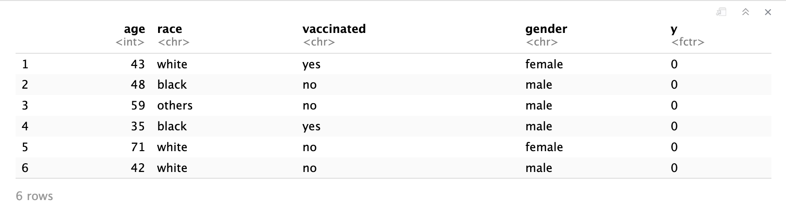
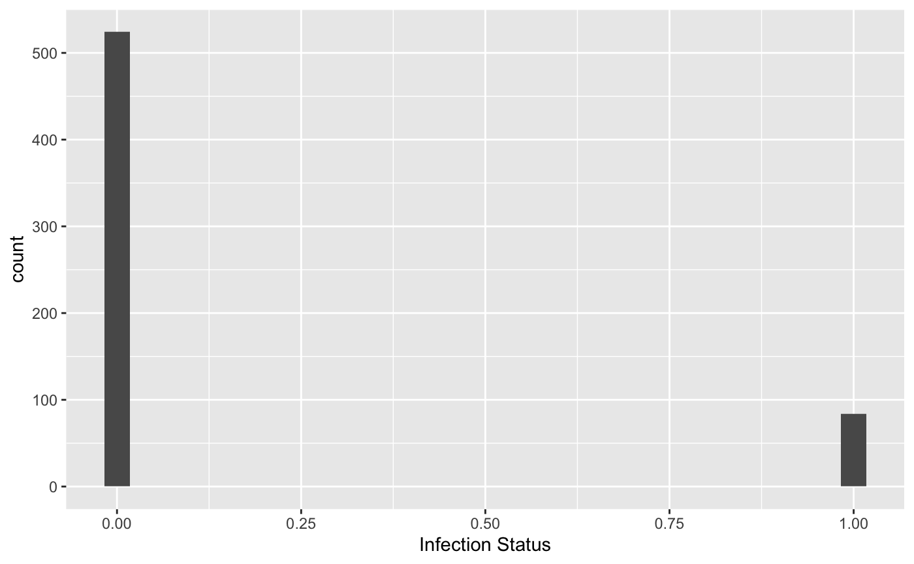
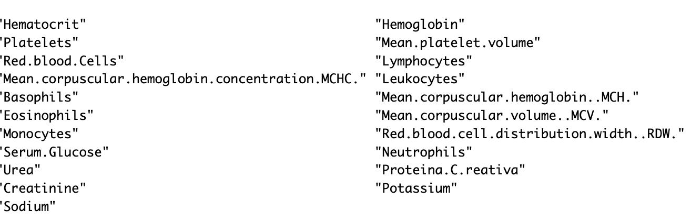

Factors in COVID-19 Diagnosis
Executive Summary
The purpose of this report is to address two topics: (1) The association between COVID-19 vaccination and infection. Does this association depend on demographics. (2) Make predictions for COVID-19 infection using laboratory tests and demographic variables. There is a complication as not every data entry has all the laboratory tests. Imputation methods are implemented to address the missing data.
Conclusion:
Introduction
The COVID-19 pandemic has changed everyone’s life these past four years. The very first COVID case in the US was found in the Seattle area, where I was studying at the time. It was an experience to say at the least to be part of that ground zero COVID moment.
Here is a news report from that moment in time:
After a couple years, the medical professionals were able to develop vaccinations for COVID-19. However, there were still a surge of COVID cases from time to time. It would be an interesting and important to study if there is an association between the newly infected and their vaccination status, as well as other variables that is available.
The data set contains 608 observations. Each observation contains infection status, vaccination status, demographic variables(gender, race, and age). As mentioned above, there are laboratory tests available for certain observations. The data is provided to me, and I don’t have a full understanding of how the data is collected, however, it would be safe to speculate that they were collected in a place like a hospital and such.
There are two topics that this report is aiming to address:
The association between COVID-19 vaccination and infection. Does this association depend on demographics
The relationship between COVID-19 infection and vaccination status,laboratory tests and demographic variables. Two models will be presented based on how much information was used. A assessment of the model performances will also be presented at the end.
Methods
Topic 1:
Topic 2:
There are 2 models that can be built based on how much information was used.
- Build a model based on age, race, vaccinated, and gender, which were all available and there was no missing data.
A couple of techniques that are used in this model building need to be discussed before presenting the model
Cross Validation:
Cross Validation(CV) is a practice where portions of the data is reserved to test and train the model.The main type of CV used in this project is called K fold CV.
K fold CV is a technique that divides data into K folds of equal sizes. One fold is used as a validation set, and the rest are used to train the model. Repeat this step for K times, where each fold is used as a validation fold. Take the average of the prediction errors.
K will be set to 10 in this project. The main use of CV for this project is used with LASSO method(detailed explanation in the following section)
Logistic Regression:
Logistic Regression is a form of a Generalized Linear Model(GLM). The GLM generalizes linear regression by allowing the linear model to be related to the response variable via a link function.
A GLM contains 3 components:
Random Component: This refers to the probability distribution of the response variable(Y)
Systematic Component: Combination of linear predictors \beta_0 +\beta_1x_{1} + \beta_2x_{2} +...\beta_px_{p}
Link Function: link between random and systematic components. In this case, it’s the logit function.
Logistic Regression estimates the probability of an event occurring, in this case, infection, based on given a set of independent variables(demographic variable and lab tests).
Once the probabilities are estimated, there will be a threshold that needs to be determined. For the probabilities less than that threshold, it will be set to negative, anything above the threshold will be set to positive. In the context of this problem, it will be the COVID diagnosis.
To perform some EDA before fitting the model:
- A initial look at the data frame. Race, vaccinated and gender will be coded as factors, the infection status(y) is coded as 0 if negative and 1 if positive

- A initial look at the distribution of the infected. (Negative is coded as 0). Out of everyone who is tested, an overwhelming majority have a negative test result.

It is a good practice to perform data splitting before building the model. In this case, the data frame will be separated based on the outcome variable y. Then take a 20% of random samples from the positive results and a 20% of random samples from the negative results as the testing set. The remaining will be the training set. This division will ensure there are positive cases in both training and testing, since there an overwhelming majority have a negative test result.
A model is built based on the training data with the implementation of CV. The model results is presented in the next section.
A prediction is made using the model and the training data. A detailed presentation and comparison between the models is presented in the next section.
- Build a model based when demographic variables (age, race, vaccinated, and gender) and laboratory tests are available
As mentioned above, the lab test results are not available for all observations due to practical reasons. Therefore, an imputation of the missing data will be performed. The first step is to investigate which tests have missing values:
 It is important to note that the distribution of all of these lab tests are normalized to have a mean 0 and standard deviation 1.
An imputation procedure called multiple imputation